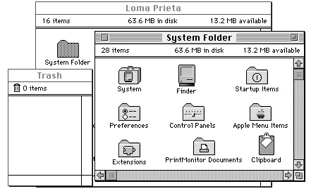

Legacy Document
Important: The information in this document is obsolete and should not be used for new development.
Important: The information in this document is obsolete and should not be used for new development.


Using the System Folder and Its Related Directories
The System Folder is a directory that stores essential system software such as the System file, the Finder, and printer drivers. System 7 introduced a new organization for the System Folder, which contains a set of new subdirectories to hold related files. The Finder uses these subdirectories to facilitate file management for the user. For example, by sorting and storing such files as desk accessories, control panels, fonts, preferences files, system extensions, and temporary files into separate folders for the user, the Finder keeps the top level of the System Folder from being cluttered with dozens, or even hundreds, of files.The user can easily install and remove fonts, sounds, keyboard layouts, control panels, and system extensions by dragging their icons to the System Folder icon. The Finder then moves them into the proper subdirectories. When a control panel icon is dragged to the System Folder icon, for example, the Finder presents a dialog box that asks the user, "Place this control panel into the 'Control Panels' folder?" The user accepts by clicking the OK button or declines by clicking the Cancel button.
Figure 7-15 shows a user's view of the new directory organization typically found within the System Folder.
- Note
- If users drag icons to the open System Folder window instead of to
the System Folder icon, the Finder copies or moves the files into the System Folder directory instead of copying or moving them to the proper subdirectories.
Figure 7-15 The System Folder and related folders

Additional related directories are located at the root directory. Notice the Trash window. It shows the contents of the Trash directory, which is represented to the user by the Trash icon. The Trash directory exists at the root level of the volume. A Macintosh sharing files among users in a network environment maintains separate Trash subdirectories within a shared Trash directory. That is, the server creates a separate, uniquely named Trash subdirectory for every user who opens a volume on a Macintosh server and drags an object to the Trash icon. All Trash subdirectories within a shared Trash directory are invisible to users. On the desktop, the user sees only the Trash icon of the local Macintosh computer. When the user double-clicks the Trash icon, a window reveals the names of only those files that the user has thrown away; no distinction is made to the user as to which computers any of these files originated on.
At the root level of the volume, the Finder also maintains a Temporary Items folder
and a Desktop Folder, both of which are invisible to the user and so don't appear
in Figure 7-15.Figure 7-15 illustrates the folder organization typically found on single-user systems. Of all the related directories shown, your application is likely to use only the Preferences folder and the Temporary Items folder. However, you cannot be certain of the location of these or any of the other system-related directories. In the future, these system-related directories may not be located in the System Folder or in the root directory.
You can use the
FindFolderfunction (described on page 7-51) to get the path information to these directories. Of these directories, the only ones you are ever likely
to need are Preferences, Temporary Items, and Trash. For example, you might wish to check for the existence of a user's configuration file in Preferences, create a temporary file in Temporary Items, or--if your application runs out of storage when trying to save
a file--check how much storage is taken by items in the Trash directory and report this to the user.Your application may freely use these two directories for storing and locating
important files:
It's important to bear in mind a few rules about storing your application's files. First, don't store any files at the top level of the System Folder. Use the Preferences directory
- Preferences, located in the System Folder, holds preferences files to record local configuration settings. Your application can store its preferences file in this directory. The active Finder Preferences file is always stored in the Preferences folder. Do not use the Preferences folder to hold information that is to be shared by users on more than one Macintosh computer on a network. Ensure that your application can always operate even if its preferences file has been deleted.
- Temporary Items, located at the root level of the volume, holds temporary files created by applications. The Temporary Items folder is invisible to the user. Your application can place its temporary files in this directory. A temporary file should exist only as long as your application needs to keep it open. As soon as your application closes the file, your application should remove the temporary file. You should also ensure that you are assigning a unique name to your temporary file so that you don't write over another application's file.
or one of the other directories described in the following list.Second, use the
FindFolderfunction to locate or put files in the right place. Don't assume files are on the same volume as your application; they could be on a different local volume, or on a remote volume on the network.Third, don't store any files that multiple users may need to access, such as dictionaries and format converters, in the Preferences directory or in any of the directories located in the System Folder. Remember that the files in the System Folder are generally accessible only to the person who starts up from the System file in that System Folder.
There are additional directories that either the user or the Finder uses for storing and locating important files; these directories are described here. Generally, your application should not store files in these directories.
Although the names of the visible system-related folders vary on different international systems, the invisible directories Temporary Items and Desktop Folder keep these names on all systems. System software assigns unique names for invisible Trash subdirectories.
- Apple Menu Items, located in the System Folder, holds the standard desk accessories plus any other desk accessories, applications, files, folders, or aliases that the user wants to display in the Apple menu. Only the user and the Installer should put things into the Apple Menu Items folder.
- Control Panels, located in the System Folder, holds control panels. The Apple Menu Items folder holds an alias to the Control Panels folder so that the user can also reach the control panels through the Apple menu. Only the user and the Installer should put things into the Control Panels folder.
- Desktop Folder, which is invisible to users, is located at the root level of the volume. The Desktop Folder stores information about the icons that appear on the desktop area of the screen. The user controls the contents of the Desktop Folder by arranging icons on the screen. What appears on the screen to the user is the union of the contents of Desktop Folders for all mounted volumes.
- Extensions, located in the System Folder, holds extensions--that is, code that is not part of the basic system software but that provides system-level services, such as printer drivers and system extensions. Files of type
'INIT', previously called startup documents, and of type'appe', also known as background-only applications, are routed by the Finder to this folder. Files of type'scri'(system extensions for
script systems) are also routed to this folder. Only the user and the Installer should put files into the Extensions folder.- Fonts, located in the System Folder on computers using system software version 7.1 or later, holds fonts. Only the user and the Installer should put fonts into the Fonts folder.
- PrintMonitor Documents, located in the System Folder, holds spooled docu-
ments waiting to be printed. Only the printing software uses the PrintMonitor Documents folder.- Rescued Items from volume name, located in the Trash directory, is a directory created by the Finder at system startup, restart, or shutdown only when the Finder finds items in the Temporary Items folder. Since applications should remove their temporary files when they close them, the existence of a file in a Temporary Items folder indicates a system crash. When the Finder discovers a file in the Temporary Items folder, the Finder creates a Rescued Items from volume name directory that is named for the volume on which the Temporary Items folder exists. For example, the Finder creates a directory called Rescued Items from Loma Prieta when a file is discovered in the Temporary Items folder on a volume named Loma Prieta. The Finder then moves the temporary file to that directory so that users can examine the file in case they want to recreate their work up to the time of the system crash. When a user empties the Trash, all Rescued Items folders disappear. Only the Finder should put anything into Rescued Items directories.
- Startup Items, located in the System Folder, holds applications and desk accessories (or their aliases) that the user wants started up every time the Finder starts up.
Only the user should put things into the Startup Items folder. Note that there is a distinction between startup applications that users put in the Startup Items folder
and system extensions of file type'INIT'(previously called startup documents), which are typically installed in the Extensions folder.- System file, located in the System Folder, contains the basic system software plus some system resources, such as sound and keyboard resources. The System file behaves like a folder in this regard: although it looks like a suitcase icon, double- clicking it opens a window that reveals movable resource files (such as sounds, keyboard layouts, and script system resource collections) stored in the System file. ("Distributing Fonts, Sounds, and Other Movable Resources" beginning on page 7-34 describes the resources that can be moved into the System file.) Only the user and the Installer should put resources into the System file.
- Trash, located at the root level of a volume, holds items that the user moves to the Trash icon. After opening the Trash icon, the user sees the collection of all items that he or she has moved to the Trash icon--that is, the union of all appropriate Trash directories from all mounted volumes. A Macintosh set up to share files among users in a network environment maintains separate Trash subdirectories for remote users within its shared Trash directory. That is, the server creates a separate, uniquely named Trash subdirectory for every remote user who opens a volume on a Macintosh file server and drags an object to the Trash icon. All Trash subdirectories and the shared Trash directory are invisible to users. The Finder empties a Trash directory (or, in the case of a file server, a Trash subdirectory) only when the user of that directory chooses the Empty Trash command.
Generally, you should store application-specific files in the folder with your application, not in any of these system-related directories. Your application may want to provide users with a mechanism to specify a directory in which to look for auxiliary files. For example, you could design a customized version of the open file dialog box that allows users to specify a path to locations where files are stored. This technique may be useful for finding files that are shared by several applications. It's also possible to track the location of files by using the Alias Manager. For details, see the chapter "Alias Manager" in Inside Macintosh: Files.
When you design your application, it's important to consider the user's view of the tools that you provide. In most cases you'll want to build your application so that the user deals with one icon that represents the entire set of abilities your application provides. This scheme simplifies the user's world by restricting the complexity of installing and maintaining your product. If you provide optional tools--such as a dictionary and thesaurus--that have their own icons, it's a good idea to allow these tools to work from any location in the file system rather than relying on their storage somewhere in the System Folder.